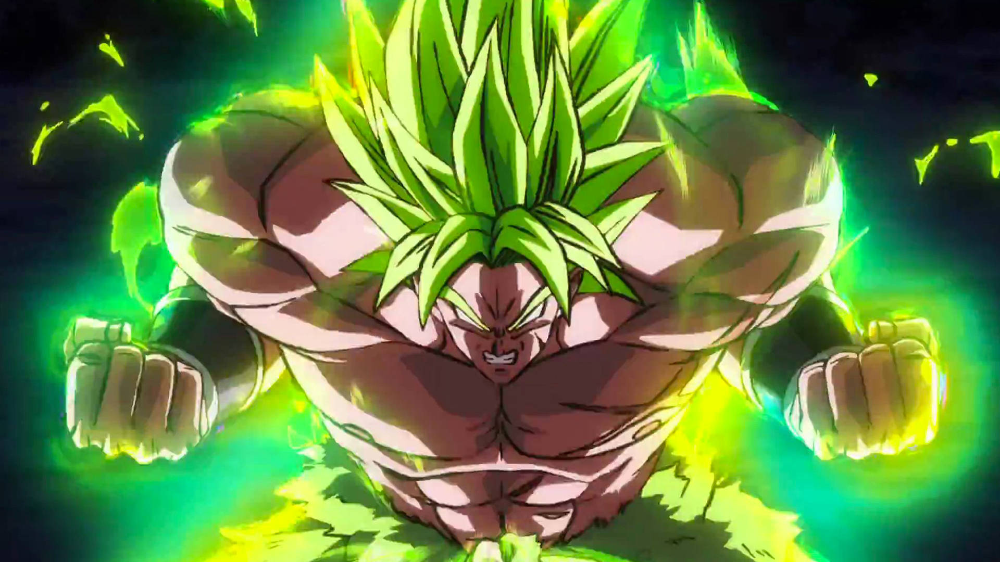
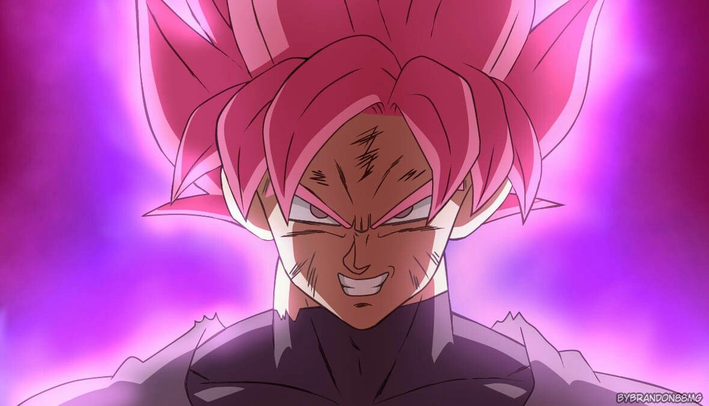
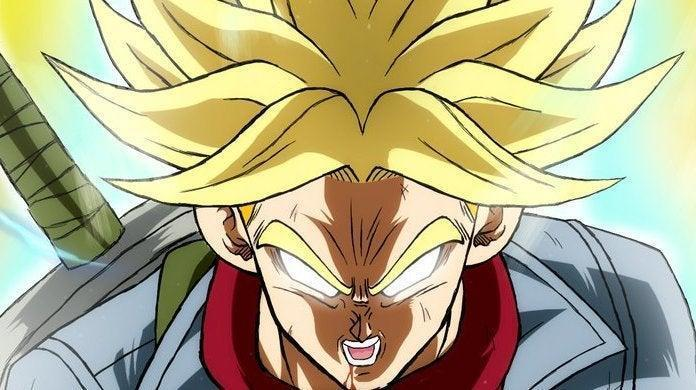

Unique Ascension
Broly's Full Power Super Saiyan transformation in the Dragon Ball Super: Broly movie is marked by his green hair, yellow-green eyes, and increased muscle mass. What distinguishes this form is Broly's exceptional control over his power and emotions, allowing him to maintain his sanity while accessing his incredible strength. In this state, he becomes a formidable and strategic fighter with the ability to engage in intense battles without losing control, making him a unique and powerful character in the Dragon Ball Super universe.

Gohan Beast is a transformation achieved by Son Gohan. It is unlocked by immense rage, and was achieved when against Cell Max where the Saiyan-half saw his teacher under threat. It is a direct successor to the Ultimate Gohan transformation. It gives him a double aure with the inner aure being magenta in color anf the outside a deep purple. It makes his personality more fierce and slight sinister as the "the beast within has come forth."
Super Saiyan Rose is a unique transformation featured in the Dragon Ball Super series, used by the antagonist Goku Black. This form is distinguished by its striking pink hair and aura. Super Saiyan Rose is a reflection of the godly power of a Saiyan and provides a significant boost in strength, agility, and combat abilities, making Goku Black an even more formidable adversary.
Super Saiyan Rage is a unique and temporary transformation featured in the Dragon Ball series, primarily used by Future Trunks. It combines the power of a Super Saiyan with intense emotional energy, typically triggered by intense anger or desperation. This form grants Trunks immense strength and agility, allowing him to hold his own against powerful foes like Goku Black and Zamasu in the Future Trunks Saga of Dragon Ball Super.